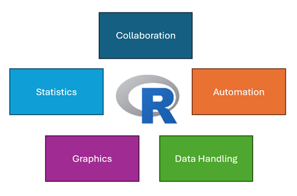
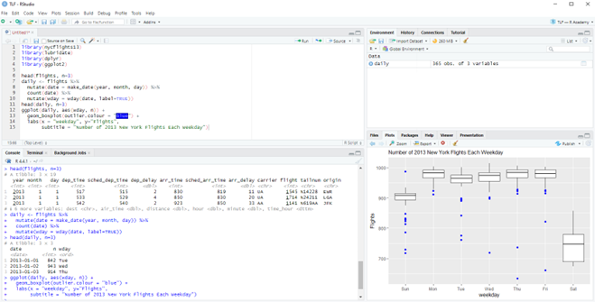
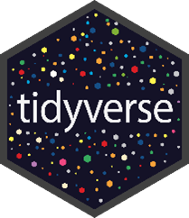
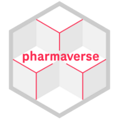

R Introduction
What is R? – R: The R Project for Statistical Computing
R is a powerful programming language and environment specifically designed for statistical computing and graphics. Born in the halls of academia in 1993, it has evolved into an essential tool in the statistical world, especially for clinical research.
Think of R as your statistical workshop where:
- You can perform sophisticated statistical analyses, from traditional hypothesis testing to cutting-edge adaptive designs
- Create publication-quality graphics with precise control over every visual element
- Handle data of any size or structure with elegant efficiency
- Automate repetitive tasks with custom functions
- Share and collaborate through reproducible code

What makes R special is its modular framework and extensibility—it’s like having a basic toolkit that you can continuously enhance with specialized instruments. This is particularly valuable in clinical research, where methodological requirements can be highly specific and evolve quickly.
Did You Know? 📝 R was named after its creators’ first initials (Ross Ihaka and Robert Gentleman) and as a playful reference to the S programming language it superseded.
CRAN – the Comprehensive R Archive Network – CRAN
Your one-stop package shop!
CRAN is the treasure trove of over 22,000 packages that extend R’s capabilities in a multitude of ways – statistical, graphical, AI, computational.
- Want to analyze time-to-event data? There are packages for that
- Looking to design adaptive clinical trials? Covered
- Looking to build machine learning models? Take your pick
Packages and Dependencies
R packages are like LEGO blocks—they snap together to build something amazing. Here’s what you need to know:
- Packages are collections of R functions, data, and code
- Dependencies are packages that need to be installed for your package to work
- Installation can be as simple as: install.packages(“package_name”) and dependencies will install automatically
Other Open-Source Languages
While R excels in statistical computing and is the main open-source language currently being used in the industry, there are others:
- Python: Used extensively for machine learning, artificial intelligence, and deep learning applications. Popular for mathematics courses, processing real-world evidence data, natural language processing of medical texts, and developing prediction models for patient outcomes.
- Julia: A high-performance language specifically designed for numerical and scientific computing. Gaining traction in clinical trial simulations and complex mathematical modeling due to its exceptional speed, particularly useful for large-scale clinical trial simulations and pharmacometric analyses.
- JavaScript: Powers interactive applications and dashboards for clinical trial data visualization. Essential for creating dynamic, web-based reporting tools and interactive safety monitoring displays. Often used with R Shiny applications to enhance user interfaces.
- HTML: The foundation for web-based tasks. Essential for creating structured, accessible documentation that can be easily shared across organizations.
Integrated Development Environments (IDEs)
An Integrated Development Environment (IDE) is like a sophisticated text editor specifically designed for writing code. Instead of just typing R commands into a basic console, an IDE provides a complete workspace with helpful features like syntax highlighting (coloring your code for readability), error checking, code completion, and integrated help. Think of it as the difference between writing in a basic notepad versus using a modern word processor with spell check, formatting, and other helpful tools. The right IDE can significantly improve your coding efficiency and help maintain good programming practices. It brings together all the tools you need - code editor, R console, file management, and visualization tools - into one organized interface.
RStudio
RStudio is the most widely used IDE for R programming in the pharmaceutical industry.
RStudio Desktop
The free version of RStudio provides all essential features:
- Code editor with syntax highlighting
- R console for immediate output
- Environment pane showing your data and objects
- Output panes for plots, files, packages, and help
- Project management capabilities
- Built-in Git integration

Posit Workbench
The paid, enterprise version of RStudio is tailored for collaboration and scalability:
Key Benefits:
Centralized & Secure: Everyone works in the same validated environment through a web browser, rather than having R Studio installed on individual computers
Collaboration: Multiple team members can work on the same projects and share code easily
Control: IT departments can manage:
- Who has access to what
- Which R versions and packages are available
- Where data and code are stored
- How resources (memory, CPU) are allocated
Alternative IDEs
Other IDEs are available and may be useful depending on your needs. Here are some examples:
Visual Studio Code
Modern interface
Supports multiple programming languages
Strong debugging tools
Jupyter Notebook
Document-style analysis
Combines code and documentation
Popular for sharing analytical work
Posit Positron
New desktop IDE from Posit
Modern, lightweight alternative to RStudio Desktop
Built on VS Code technology
Supports both R and Python
Currently in early adoption phase
Popular Packages
So you have R in the R Studio IDE, let’s introduce some essential packages to start your journey.
Base R: Your Foundation
Base R comes pre-installed with your R installation and includes fundamental tools for:
- Data structures (vectors, matrices, data frames)
- Basic statistical functions (mean, median, linear regression)
- Simple plotting capabilities
- File input/output operations
See this helpful cheat sheet for basic commands – r-cheat-sheet.key
R comes with many built-in packages. Some are loaded automatically when you start R (like stats and graphics), while others are installed but need to be loaded with library() when you need them (like survival or MASS).
While Base R is powerful, modern R programming often relies on additional packages that make coding more intuitive and efficient. This firstly leads us on to the tidyverse.
Tidyverse: Modern Data Science Tools – Tidyverse

The tidyverse is a collection of packages designed to work together harmoniously for standard dataset tasks. Core packages include:
- dplyr: Data manipulation (filter, sort, summarize)
- ggplot2: Creating professional graphics
- tidyr: Data cleaning and reshaping
- haven: SAS data import
- tibble: Modern data frames
Example of tidyverse syntax:
# Base R approach
subset(data, Age > 18)[, c("PatientID", "Treatment")]
# Tidyverse approach
data %>%
filter(Age > 18) %>%
select(PatientID, Treatment)Pharmaverse: Industry-Specific Tools – Pharmaverse

The pharmaverse is a collection of packages specifically designed for clinical trial workflows. Here are some examples:
- admiral: ADaM dataset creation following CDISC standards
- ggsurvfit: Publication-ready survival plots and time-to-event analyses
- riskmetric: Risk assessment and validation of R packages
- logrx: Standardized logging for clinical trial analysis
These packages work together to support regulatory-compliant clinical trial analysis workflows while maintaining reproducibility and traceability.
Getting Started Tip: Most pharmaverse packages build on tidyverse principles, so becoming comfortable with tidyverse first will make learning industry-specific packages easier.
Quick Start: Your First 5 Minutes with R
Let’s walk through a complete example from installation to visualization. We’ll analyse some survival data using just the essentials:
# 1. Install and load just what we need
install.packages(c("dplyr", "ggplot2", "survival")) # Only needed once
library(dplyr)
library(ggplot2)
library(survival)
# 2. Get some example data (built into survival package)
?lung # Information on survival data from a cancer study
head(lung) # Quick look at first few rows
# 3. Simple analysis: Calculate median survival time by sex
lung_analysis <- lung %>%
mutate(sex = factor(sex, labels = c("Male", "Female"))) %>%
group_by(sex) %>%
summarise(
n = n(),
median_time = median(time, na.rm = TRUE)
)
# 4. Create a simple survival plot
ggplot(lung, aes(x = time, y = status, color = factor(sex))) +
geom_point(alpha = 0.5) +
labs( title = "Survival Status by Time", x = "Time (days)", y = "Status" )Quick Start Tips:
- ✅ Start RStudio
- ✅ Copy this code into a new script
- ✅ Run each section using Ctrl+Enter (Cmd+Enter on Mac)
- ✅ Save your script (File > Save As…)
Common First-Time Issues:
- ❌ Make sure to run library() after installation
- ❌ Watch for typos - R is case-sensitive
That’s it! You’ve just completed your first R analysis. From here, you can explore more packages as needed.
Further Reading and Links
- Further Reading:
“R for Data Science” by Hadley Wickham & Garrett Grolemund
- Essential guide for modern R programming
- Free online: [R for Data Science eBook](https://r4ds.hadley.nz/)